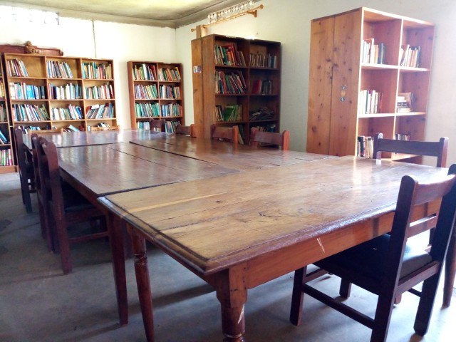
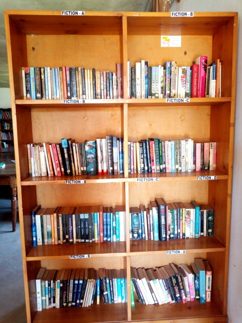

the library
When some enters the Library, he/she first register in the Library Users' Book at the reception and then proceed using the library
Everyone is required to read from the table, users get books they want to read from the shelves and sit around the table. They are not allowed to put back books in the selves that's the work of librarians because they may misplace the books in the shelves which can also give other users hard time to find that particular books to read so they just cover them and leave whatever read on the table.
People who want to read from our library are also allowed.
Someone could be looking for a place where he can be settled and feel comfort when doing his or her stuffs, this could be reading, writing and others else.
We just let him or her to use the library as long respecting our Rules and Regulations, such people they often come with their own stuffs (Mainly Books) and we give them free space to use for free of charge.
People who normally act as it has stated above are mainly students and individuals.
the newspapers
The Newspapers shelves holds the yearly compiled Newspapers.
The library receives newspapers daily between working days from Monday to Friday since the library operates in working days. We get two copies of newspapers from the Vision Group company, one copy is in English for those who don't understand local language and another copy is in local language (Luganda) and that's The New Vision and Bukedde respectively.
When comes to the end of every year both of all the copies were collected English and Luganda copies are separated and organised for binding to make a Big Book.
Each Newsbook can contain maximum of newspapers of (3) three or (4) four Months and this depends to the volume of the copies were printed in a month.
This has helped the users to look for the previous stories, news and other information easier since the old news is well organised and sorted.
There Users who visit the library daily for reading daily Newspapers and they are specialised in that, below are some of the things they come to for in the Newspapers daily;
- News
- Stories
- Health tips
- Jobs
- Adverts
- Research
- New agricultural skills
- Updates and information
There also other users who come for passed Newspapers looking for passed News, stories and other information.
the fiction books
The Fiction shelves contain books for stories mainly known as Novels.
Some users use their spare time and visit the library to read these books hence enjoying their leisure time.
Others come to use these books to find out and learn how to write novels, carrying out research and writing stories.
The books are sorted in ascending alphabetical order according in the Shelves basing on the Titles or Writers to make it easy for the user getting his search quick.
If someone is interested and liked one the books, he or she can also borrow it because the user might be coming from far/distant places or when having little time to visit the Library always.
the e-Readers
The World Reader Organisation donates e-Readers to Nakaseke Community Telecentre under the Library section through National Library of Uganda (NLU).
The first donation was in the Year of 2015 where 20 e-Readers were received, again in September of 2018 50 e-Readers were received from the World Reader Organisation and now we have 70 e-Readers in total.
The e-Readers are mainly for school pupils, Kids/children to use with the purpose of improving their reading skills and promoting their different languages.
The e-Readers store various different books in and others can be downloaded when the device is connected to the INTERNET.
It has different subjects like;
- Maths
- Science
- Foreign and Local languages;
- English
- Luganda
- Rutooro
- Runyoro
- Logics
- Stories
- Others


E-Readers are rechargeable because they were designed with in-built batteries which take like two weeks without recharging them, this is really good because it makes the School Outreach Programs easy since they save power for a long period of time.
The devices also have brightness (light) whereby a user can also use it in the darkness, user can change the level of the brightness depending on the current light if she/he wants.
User can also Bookmark and when comes next time continues reading from stopped last time, the devices also have a wide screen resolution which enables the user to see clear the contents.
Changing font size of the text is also there for the users who can see well small characters.
Pupils also use these e-Books to do their home, after pupils get dismissed from the school in the evening they first visit the Telecentre before they reach home and access the devices to work upon their homework given by their teachers at school.
Others they read stories and practicing to learn languages as well, many Pupils have liked and loved reading which has also led the number of users to increase due to the inspiration of the e-Readers.
Kids and Children also they use the e-Readers since the Librarian is always there to teach them, instructs and reading with them.
Adults, Teachers and Parents also they come to learn how to use these devices because a student may need assistance when is reading from school or home since e-Readers are also allowed to be borrowed.
the kids library
Nakaseke Community Library also has the Kids' Library besides the Adults Library.
A user may come with a kid(s) in the Library and to prevent disturbance or Interruption of the Kid to other users in the Library, the Kids are taken to their library which has everything a Kid may want, need and can use.
Kindergartens, Junior Schools and Primary Schools also bring their students to use this library and each school has it's own visitation day according to the time table.
Primary Schools: When the students are dismissed from the school after the lectures, before they go home for those who wants and interested they first visit the Telecentre to do different stuffs and activities everyone is interested in, there are many activities, games and other things that bring and attract kids/children and pupils to visit this library everyday and every time to enjoy, some are the following;
- e-Readers reading.
- Bike Riding: Since the library has Bikes.
- Fiction Books reading.
- Puzzle and Games: like Tetris and Blocks.
- Playing football/soccer: The station has a very Big good compound.
- Reading Books: subjects like; Science, Social Studies, English, Local languages, Religious Education etc...

All the above has led to the increase of the number of the users (Kids) in this library due to the reason that they enjoy and like it, during holiday again students keep coming and here we receive many users a day.